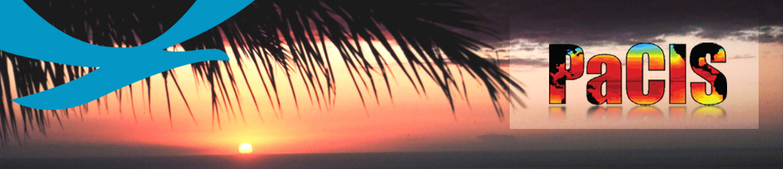
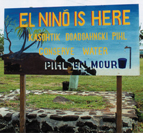
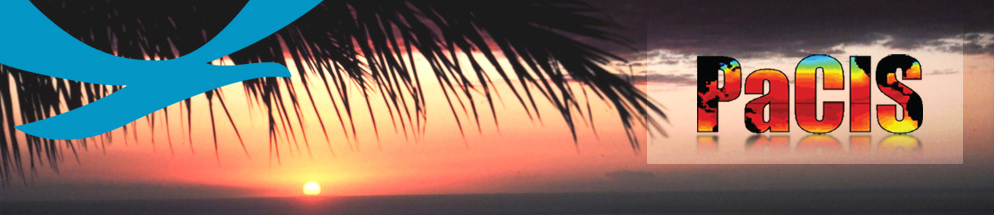
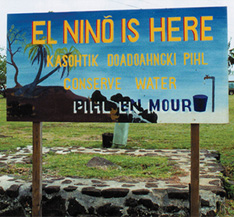
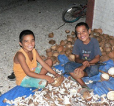
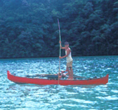
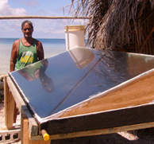
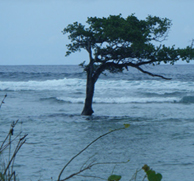

Vision
- Resilient and sustainable Pacific communities using climate information to manage risks and support practical decision-making in the context of climate variability and change.
Mission
- Clarify climate information needs to guide climate education, outreach, user information needs, observations, products, services, research and assessment.
- Provide access to critical data, research and new climate information products and services.
- Translate research and assessment results into useful and usable climate information.
- Interpret global and regional climate forecasts and projections for local applications.
- Enhance regional and local capabilities to manage risks and support sustainable development in the context of climate variability and change.
- Enhance collaboration among national, regional and international institutions and programs involved in climate information services.
- A NEW Pacific Islands Climate Outlooks Catalog. This website facilitates access to a broad range of information related to climate variability in the Pacific Islands. Users can search, by region and/or climate variable for example, and find a list of relevant products along with a brief summary and a direct link to each.
- A NEW quarterly Hawaii and Pacific Islands Climate and Impacts and Outlook "one-pager". This prototype product draws on the PEAC Climate Center’s "Pacific ENSO Update" quarterly newsletter and other sources to bring together seasonal predictions and projections information alongside recent impacts of weather and climate events in a concise and accessible format.
- Updates and additions to PacificIslandsClimate.org (a.k.a. 'piko'). This website is a gateway to a broad range of information related to climate in the Pacific Islands. It includes summaries of programs, projects, and activities, as well as products and services. The addition of the Adaptation Partnership’s Pacific chapter review of planned and existing adaptation activities are part of this effort.
- Continuation of activities associated with the Pacific Islands Regional Climate Assessment (PIRCA), a collaborative effort aimed at assessing the state of climate knowledge, impacts, and adaptive capacity in Hawaii and the U.S.-Affiliated Pacific Islands.
NEW: The PIRCA report "Climate Change and Pacific Islands: Indicators and Impacts" (41.5 Megabytes)
Pacific Islands Climate Forum 10 to 11 December, 2012 - Honolulu, Hawaii
Pacific Islands Climate Services Forum and Partners Meeting 21 to 25 January, 2013 – Suva, Fiji - Updates to Pacific Storms Climatology Products, a developmental website that provides access to an integrated suite of products that delineate patterns and trends of storm frequency and intensity - "storminess" - within the Pacific.
December 2011 PaCIS Plan for Regional Climate Services
PaCIS Terms of Reference and Composition
History of PaCIS
March 2011 PaCIS Steering Committee Meeting
PaCIS Flyer
For more information, contact: John Marra